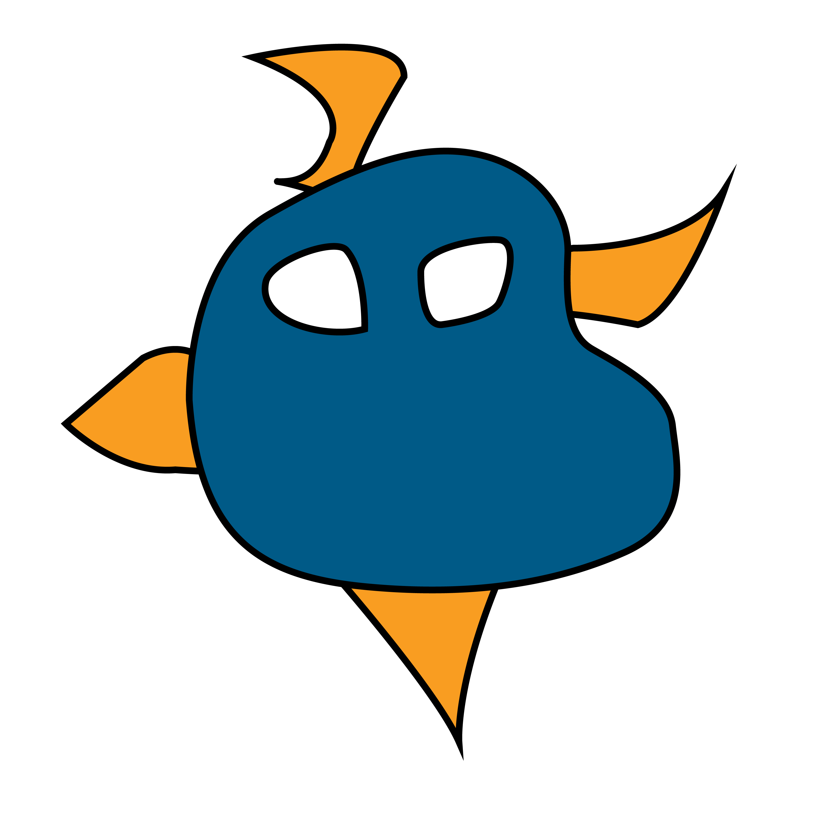
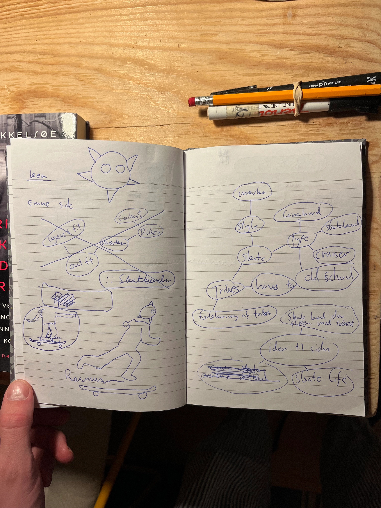
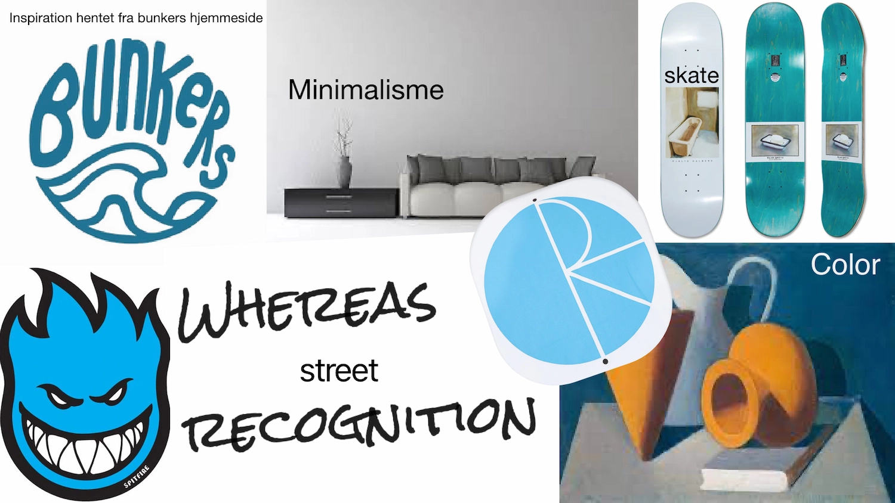

Emnesite
I anden del af grundlæggende web skulle vi også lave en hjemmeside - denne gang fra
bunden af, uden indhold fra lærerne.
Vi blev introduceret til XD hvori man laver moodboard, stiltitel, wireframs, layoutdiagrammer mm. Vi
fik også en
introduktion til Illustrator, hvor man blandt andet laver logoer og designs. Under denne
introduktion lærte vi også om
de forskellige grafikker, vektor som er svg og pixels som er png, jpg, webp.
Jeg løste opgaven ved at starte med at skitse, og efterfølgende lavede jeg et
moodboard, hvor jeg ret hurtigt fandt ud
af stilen til mit site. Det skulle være minimalistisk med et twist af street, med inspiration fra
skatermiljøet, da jeg
selv har skatet en del. Efterfølgende begyndte jeg at lave wireframe og layoutdiagram. Jeg fandt
derefter indhold til
hjemmesiden via nettet og sluttede af med at lave et mockup og en stiltitel. Vi lærte også en del om
rettighederne for
at låne af andres indhold, samt om gestaltlovenes principper om lighed og nærhed. Jeg gik derefter i
gang med at kode
hjemmesiden ud fra mit baggrundsarbejde og kodede 4 sider i html, hvor jeg efterfølgende lavede
stilen om til
minimalistisk i css.
Jeg lærte meget af opgaven, da den gav mig et godt indblik i alle de processer, der er
op til at skulle arbejde på et
produkt, så som gestaltlovenes og moodboard mm. Jeg synes, man fik et godt overblik over hele
processen.
Skitse
Moodboard
Stiltitel

Wirefram

Layoutdigram

Desktop